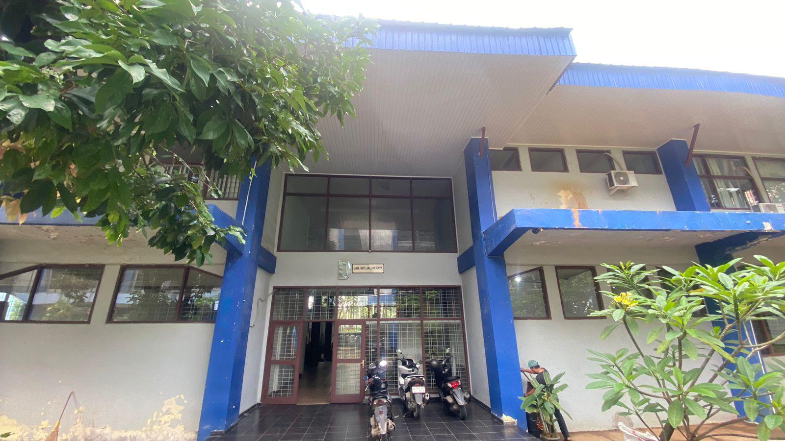

Sistem evaluasi digital untuk meningkatkan mutu pelayanan pengujian material, riset transportasi, dan praktikum mahasiswa.

Standar operasional pengujian material jalan raya terlengkap.
Mendukung penelitian skripsi, tesis, dan riset dosen dengan peralatan pengujian aspal dan agregat standar SNI.
Pusat pembelajaran praktis bagi mahasiswa Teknik Sipil untuk memahami mekanika jalan raya.
Layanan profesional pengujian material untuk kebutuhan konstruksi jalan oleh mitra instansi & swasta.
Rata-rata penilaian dan indikator performa laboratorium kami.
Pilih jenis akses untuk melanjutkan ke sistem survei
Saya ingin memberikan masukan terhadap layanan laboratorium.
Akses terbatas untuk monitoring data dan laporan evaluasi.
Feedback Anda telah kami terima dan akan digunakan sebagai bahan evaluasi berkala di Laboratorium Jalan Raya Unila.
Kelola data feedback responden Lab Jalan Raya
| Responden | Kategori | Tanggal | Skor Avg |
|---|